Twelve takes on one new destination in the side rail (bookmark, under Downloads). Silo keeps Watchlist and Favourites as two lists, so every take shares one switch at the top, styled like the library's Recommended / Browse pills. All twelve use the app's own palette, type, focus ring and button set, at TV size, 1920×1080. Click any frame to open the HTML.
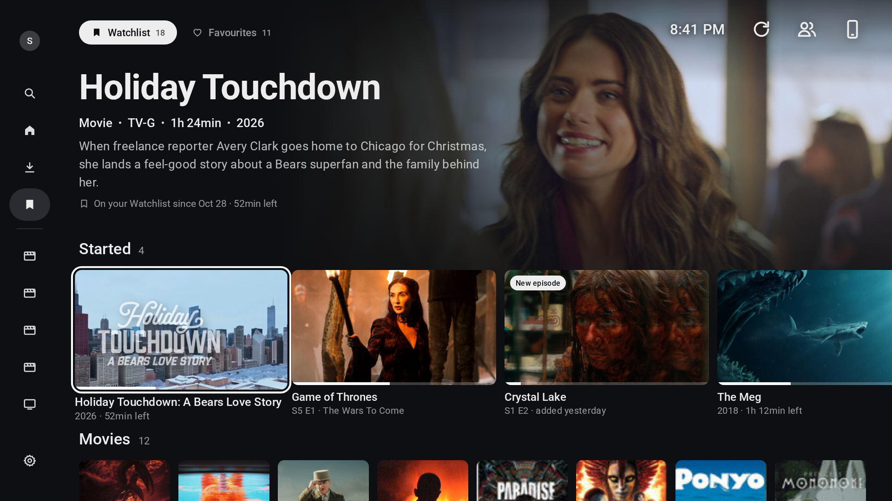
After Plex Watchlist and Plezy Home
Looks the most like Home. The focused title fills the hero, and the list is split into shelves: Started, then Movies, then Shows.
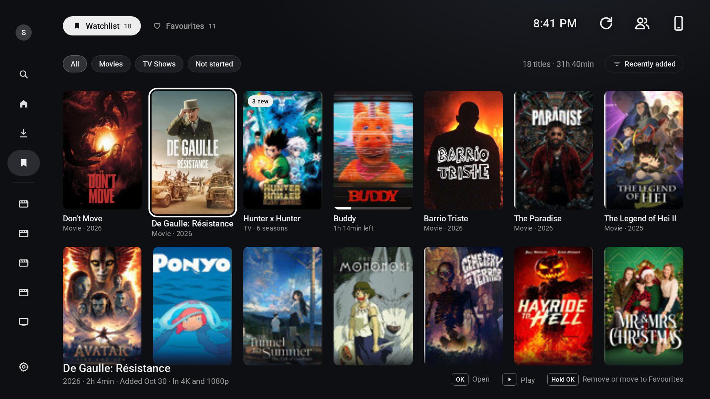
After Netflix My List
A dense grid of posters with type filters, a sort control and a running total. A strip at the bottom names the focused title and shows the remote keys.
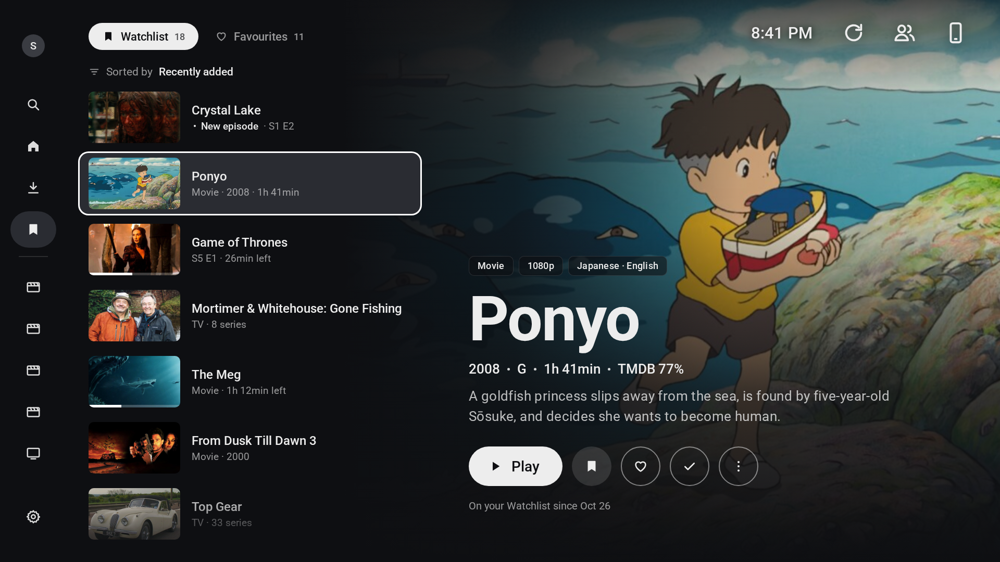
After HBO Max My Stuff
A vertical list on the left and a large preview on the right. You can play, unlist, favourite or mark watched without opening the detail page.
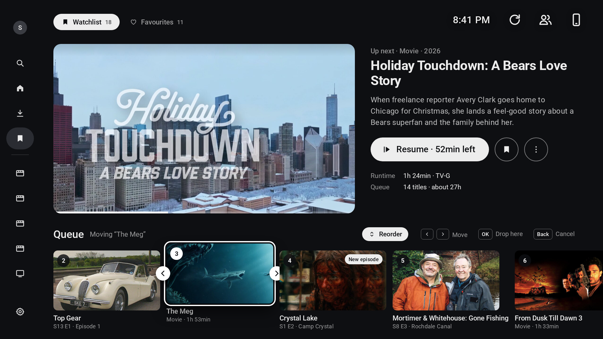
After Plex Up Next and the HBO queue
The Watchlist becomes an ordered queue. The first title gets the big slot, and the rest are numbered because their order matters. This frame shows reorder mode: The Meg is picked up, and left/right moves it.
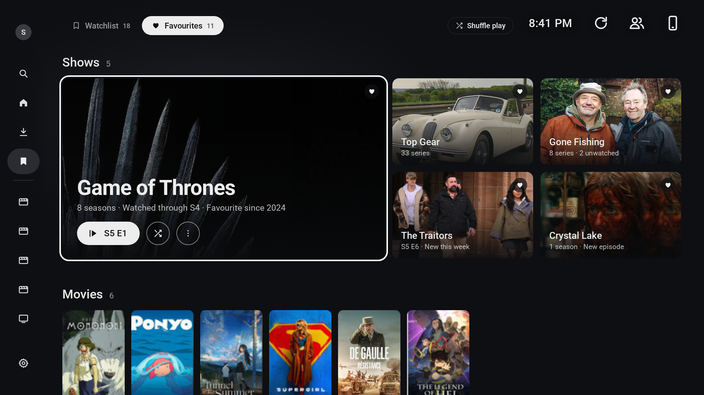
After HBO Max collection pages
The Favourites tab shown as a collection rather than a to-do list. Big landscape tiles with the title on the art, a Shuffle play shortcut, and a Movies row underneath.
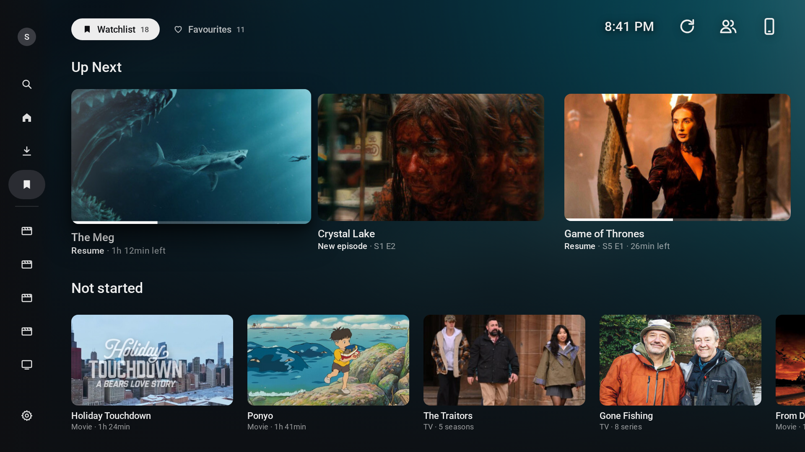
After the Apple TV app
Two calm rows of large landscape tiles: Up Next and Not started. The focused tile lifts with a soft shadow and sheen instead of a ring, and its art, heavily blurred, tints the whole screen.
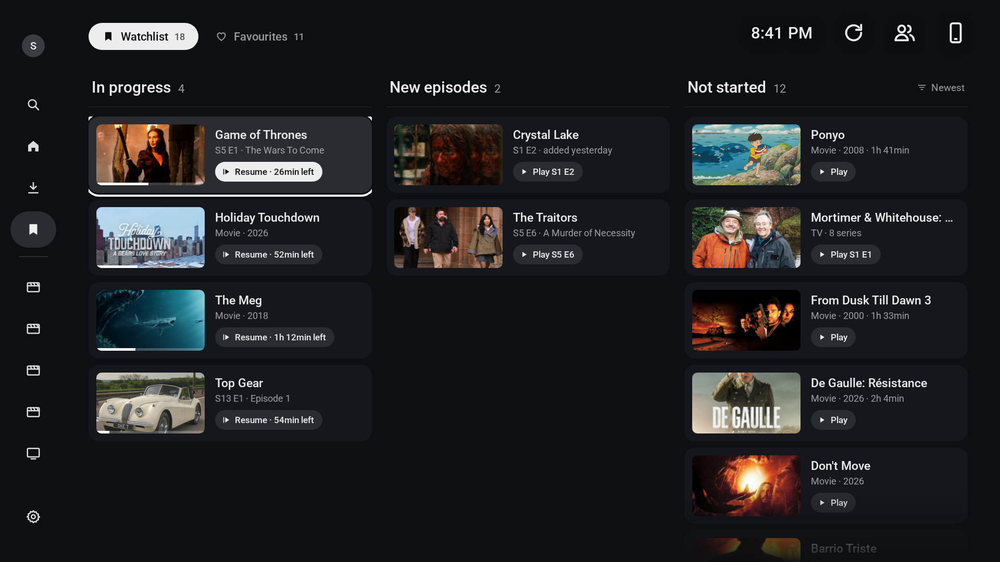
After the Crunchyroll watchlist
Three columns sorted by where you are: In progress, New episodes, Not started. Each card carries its own next action, so OK always does the obvious thing (Resume, Play S1 E2, Play).
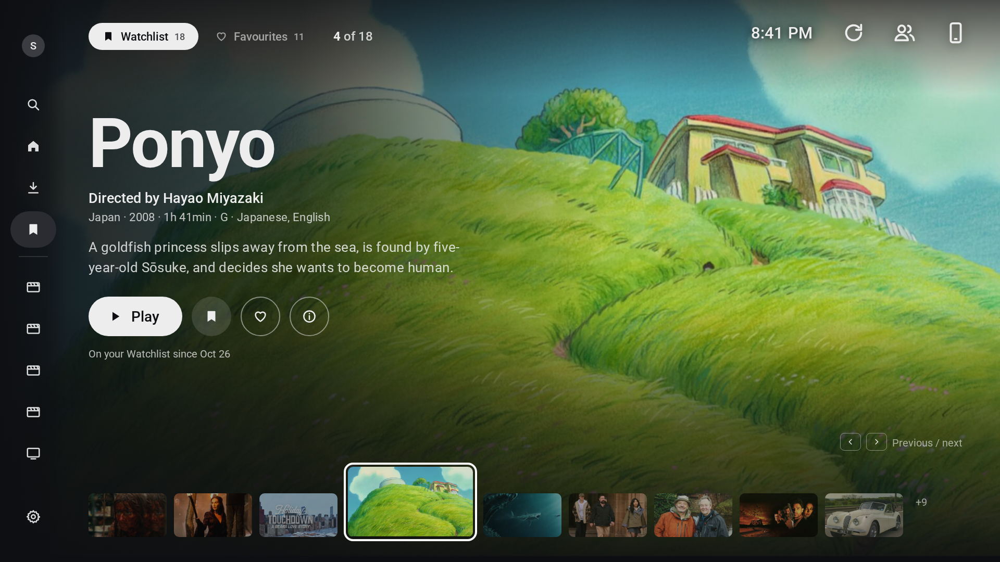
After MUBI
One title fills the screen, with director, country and language up front, and a filmstrip of the rest along the bottom. Left and right step through the list, "4 of 18" style.
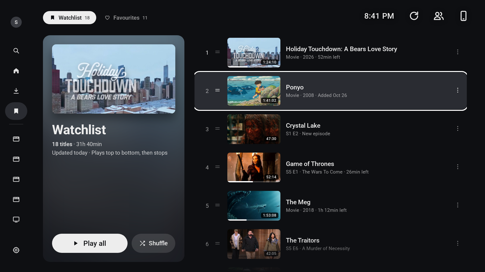
After YouTube Watch Later
The Watchlist as one playable thing: a cover panel with the total running time, Play all and Shuffle, next to a numbered list with drag handles and running times.
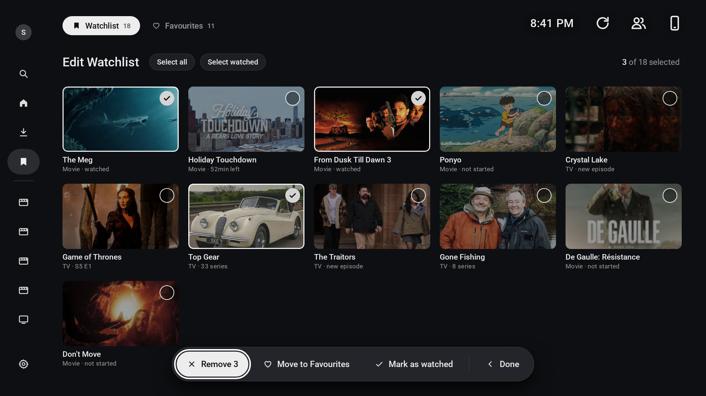
After Prime Video and Hulu
A select mode for tidying up. Unselected titles dim, selected ones get a tick, and a floating bar acts on all of them at once: Remove, Move to Favourites, Mark as watched.
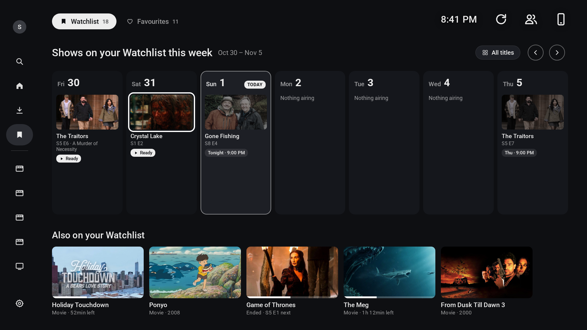
After Stremio and Trakt calendars
A week view of new episodes for shows on your Watchlist, built on the same Silo calendar the Library tab already uses. Aired episodes are marked Ready; upcoming ones are dimmed with their air time. The rest of the list sits underneath.
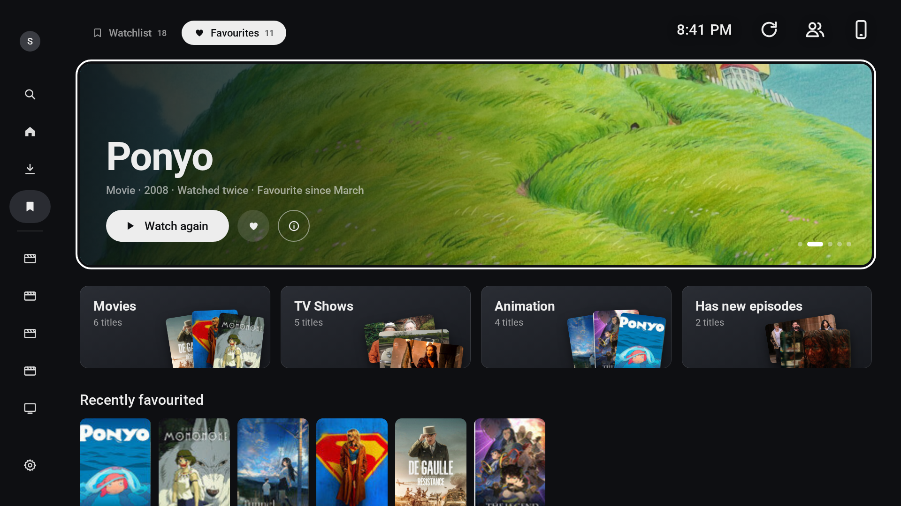
After Disney+
The Favourites tab as a small home page: a rotating hero, category tiles fanned with their own posters (Movies, TV Shows, Animation, Has new episodes), then the most recent favourites.